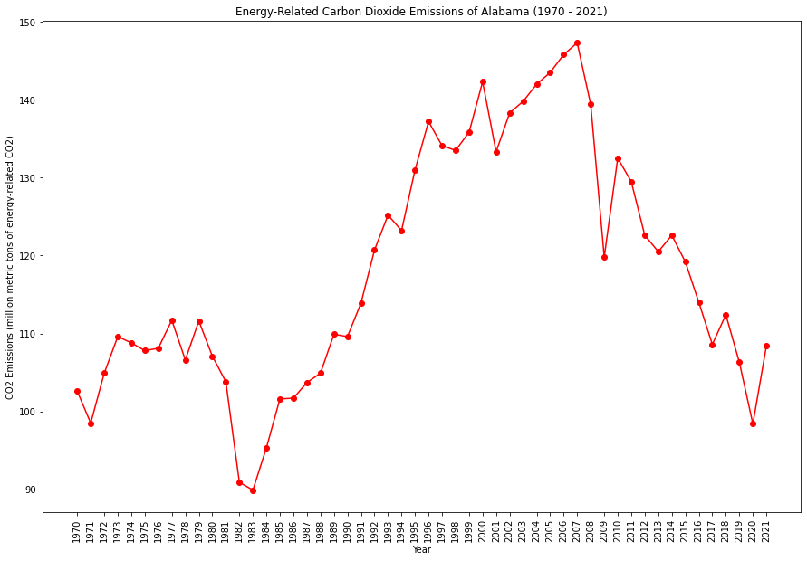
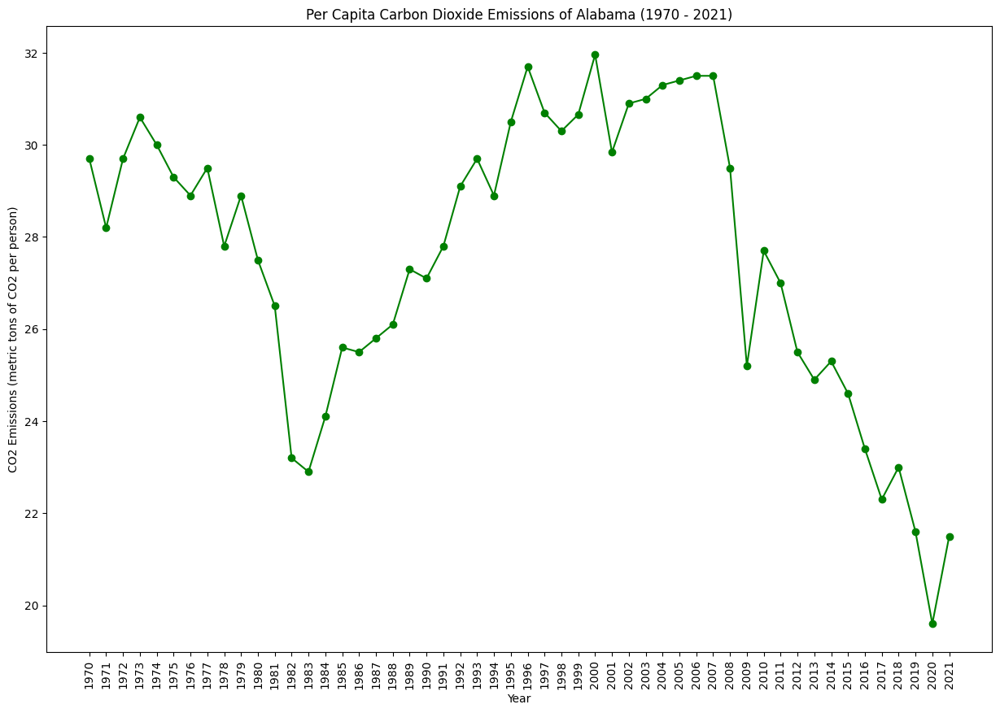
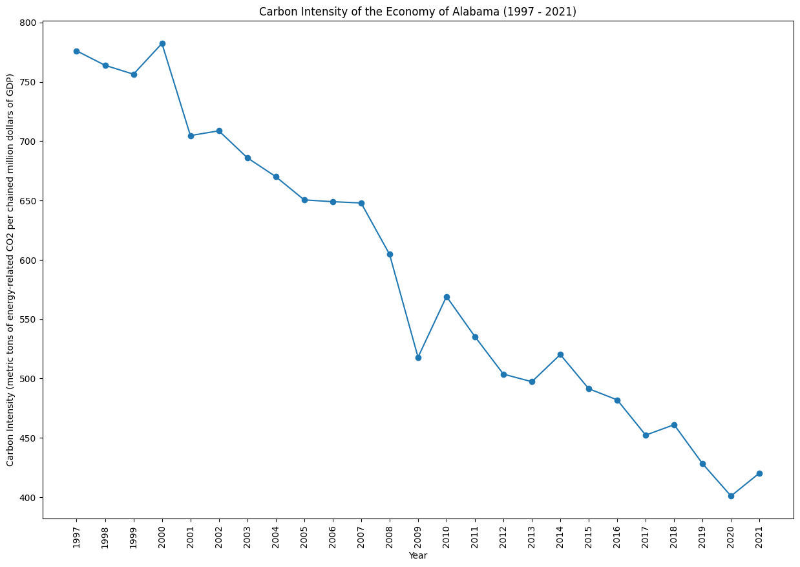

|  |  |
|  | |
Alabama has historically been dependent on fossil fuels for energy, particularly coal and natural gas. The state is working on incorporating more renewables into its energy portfolio and addressing air and water quality concerns. Balancing economic interests, including the aerospace and manufacturing sectors, with environmental considerations remains a focus.